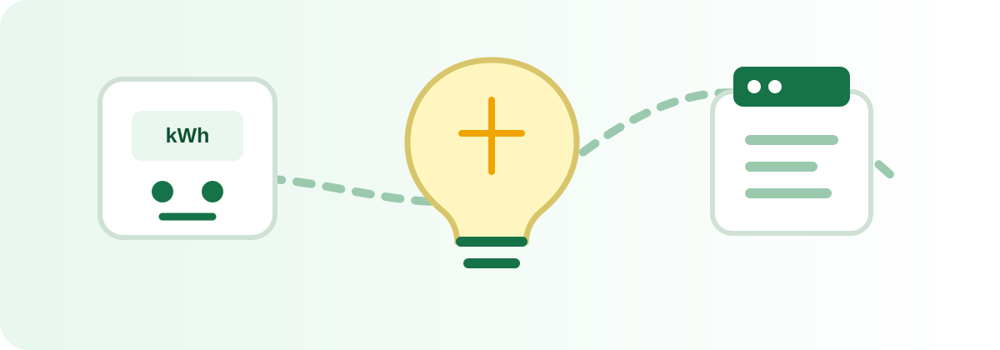

Qué puede hacer un enchufe inteligente, cuándo resulta útil y cuándo no tiene sentido comprarlo.
Un enchufe inteligente con medidor puede permitir controlar remotamente un aparato, programar horarios y consultar el consumo. La utilidad depende del aparato y de los hábitos de uso.
No hay que confundir automatización con ahorro automático: el dispositivo ayuda a controlar el uso, pero el ahorro depende de la programación y del comportamiento.
En AhorraEnCasa intentamos separar el cálculo, la medición y la compra. Una recomendación útil debe explicar qué problema resuelve y qué límites tiene.
Enlaces de afiliado. El precio y la disponibilidad se consultan directamente en Amazon.